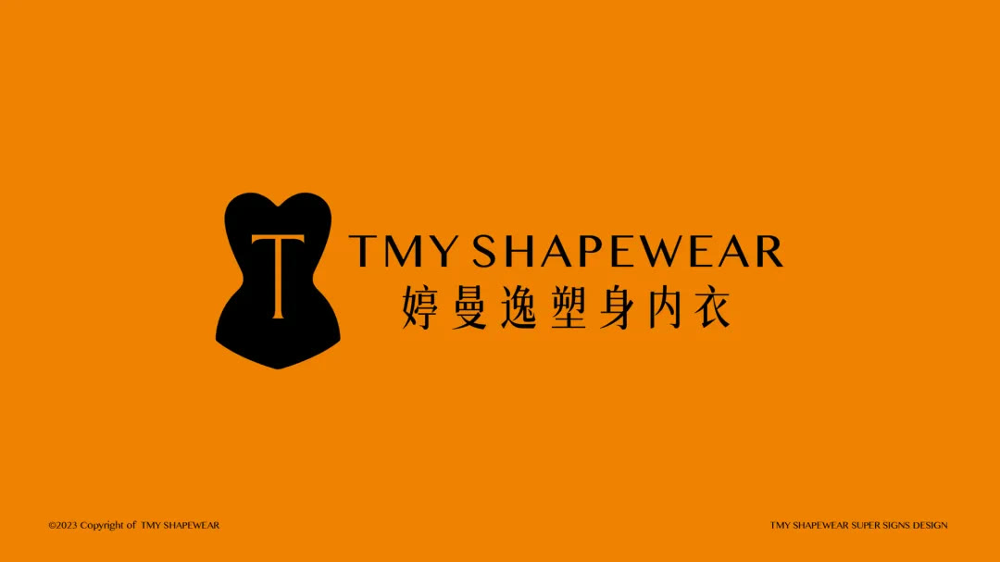
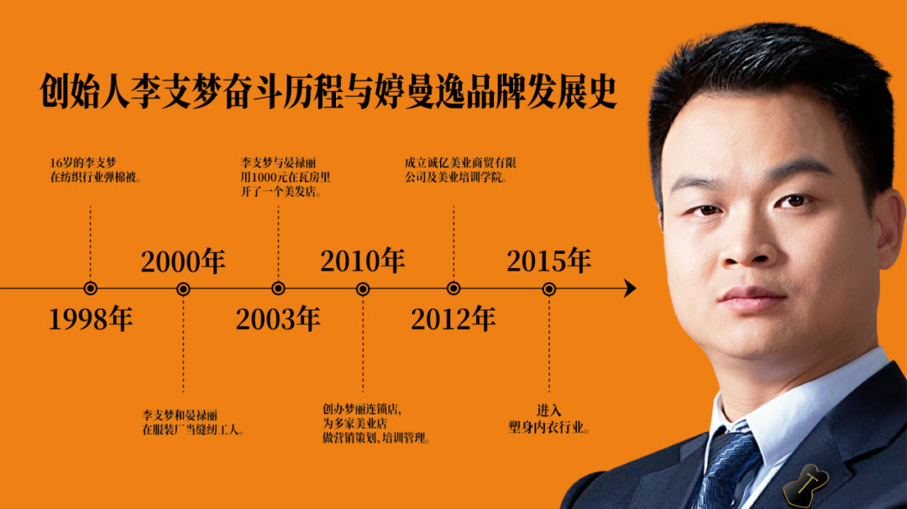
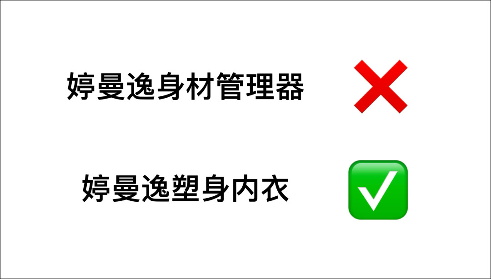

01 · 定型
品牌三角建立共同战略原点
企业能力、产品与顾客价值被统一。

02 · 渠道
门头战略与管理陪跑建立壁垒
终端识别和执行机制共同提高渠道质量。

03 · 招商
重塑招商大会的成交逻辑
品牌价值、产品结构和合作工具围绕客户决策组织。

04 · 产品
新一代产品延续品牌战略
产品开发从购买理由开始，并继续使用主品牌资产。

05 · 组织
事业理论统一企业文化
外部品牌承诺与内部行动标准保持一致。


01 · 定型
企业能力、产品与顾客价值被统一。

02 · 渠道
终端识别和执行机制共同提高渠道质量。
03 · 招商
品牌价值、产品结构和合作工具围绕客户决策组织。
04 · 产品
产品开发从购买理由开始，并继续使用主品牌资产。

05 · 组织
外部品牌承诺与内部行动标准保持一致。